-
Finding Hospitals
12:11:51 AM / 00:01:25:068 Pass
Finding Hospitals
02.28.2024 12:11:51 AM 02.28.2024 12:13:16 AM 00:01:25:068 · #test-id=1PassUser searches for doctors with specific criteriaGiven the user navigates to practo comstepDefinitions.Hooks.Screenshot(io.cucumber.java.Scenario)User searches for doctors with specific criteria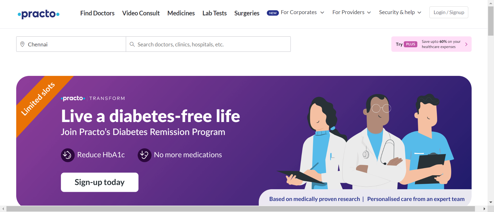When the user validates the HomepageTitlestepDefinitions.Hooks.Screenshot(io.cucumber.java.Scenario)User searches for doctors with specific criteria Then the user Navigates to the Find Doctors pagestepDefinitions.Hooks.Screenshot(io.cucumber.java.Scenario)User searches for doctors with specific criteria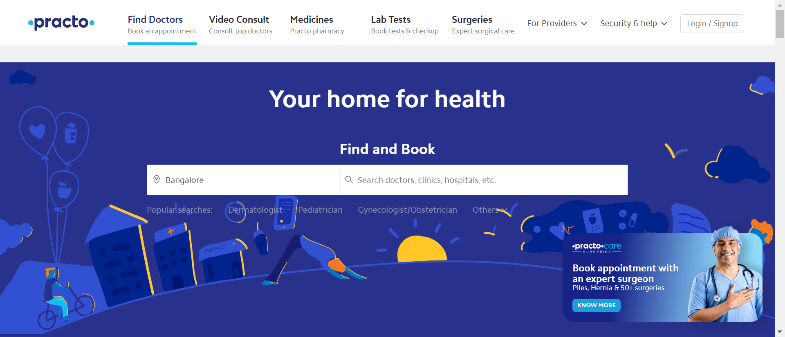And the user selects the city ChennaistepDefinitions.Hooks.Screenshot(io.cucumber.java.Scenario)User searches for doctors with specific criteria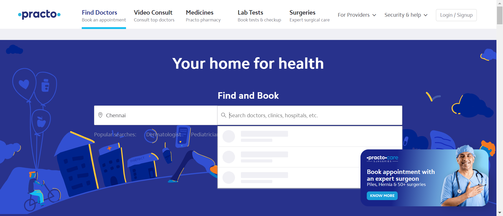And filters the search by DentiststepDefinitions.Hooks.Screenshot(io.cucumber.java.Scenario)User searches for doctors with specific criteria
Then the user Navigates to the Find Doctors pagestepDefinitions.Hooks.Screenshot(io.cucumber.java.Scenario)User searches for doctors with specific criteria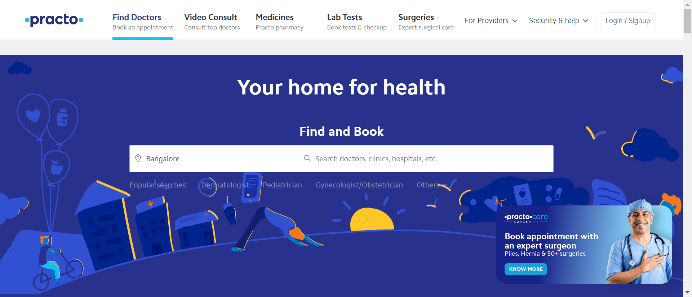And the user selects the city ChennaistepDefinitions.Hooks.Screenshot(io.cucumber.java.Scenario)User searches for doctors with specific criteria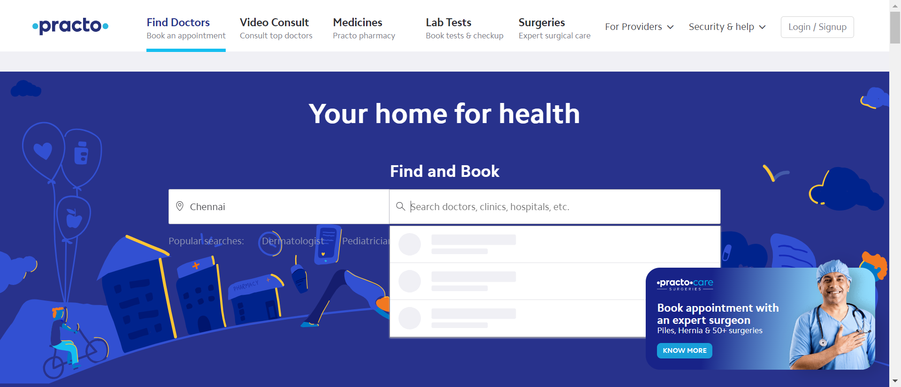And filters the search by DentiststepDefinitions.Hooks.Screenshot(io.cucumber.java.Scenario)User searches for doctors with specific criteria When the user applies filters for GenderstepDefinitions.Hooks.Screenshot(io.cucumber.java.Scenario)User searches for doctors with specific criteriaAnd the user applies filters for patient storiesstepDefinitions.Hooks.Screenshot(io.cucumber.java.Scenario)User searches for doctors with specific criteria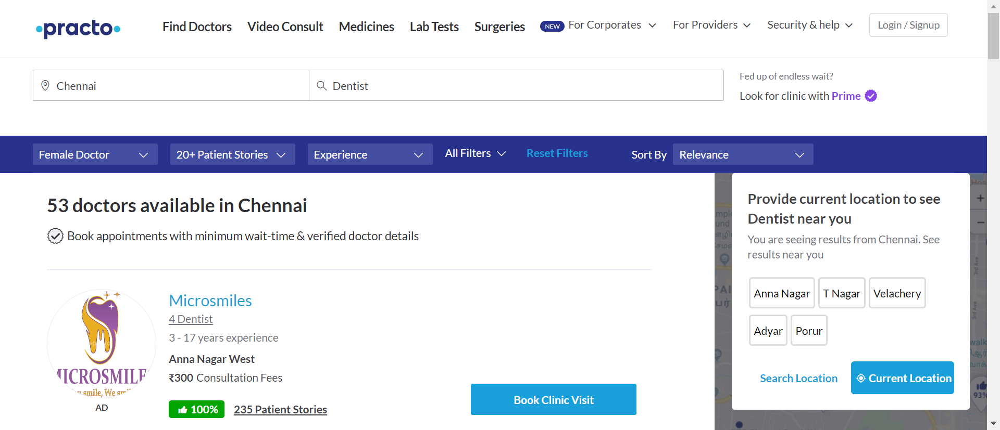And the user applies filters for experiencesstepDefinitions.Hooks.Screenshot(io.cucumber.java.Scenario)User searches for doctors with specific criteria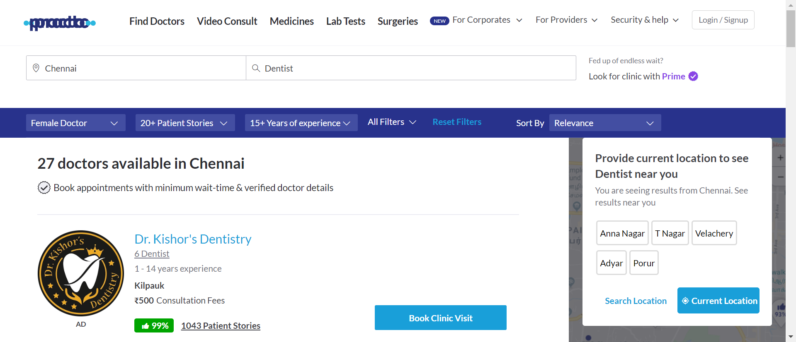And the user applies filters for feesstepDefinitions.Hooks.Screenshot(io.cucumber.java.Scenario)User searches for doctors with specific criteriaAnd the user applies filters for availabilitystepDefinitions.Hooks.Screenshot(io.cucumber.java.Scenario)User searches for doctors with specific criteriaAnd sorts the result by some criteriastepDefinitions.Hooks.Screenshot(io.cucumber.java.Scenario)User searches for doctors with specific criteria
When the user applies filters for GenderstepDefinitions.Hooks.Screenshot(io.cucumber.java.Scenario)User searches for doctors with specific criteriaAnd the user applies filters for patient storiesstepDefinitions.Hooks.Screenshot(io.cucumber.java.Scenario)User searches for doctors with specific criteria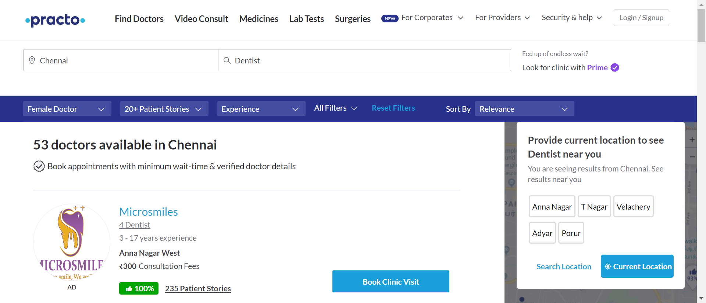And the user applies filters for experiencesstepDefinitions.Hooks.Screenshot(io.cucumber.java.Scenario)User searches for doctors with specific criteria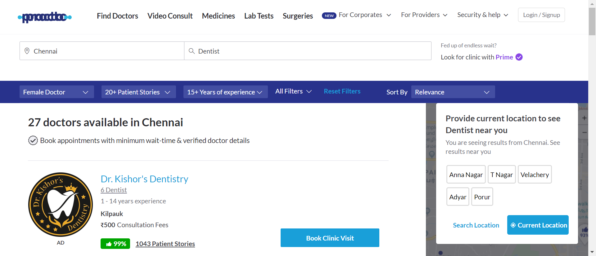And the user applies filters for feesstepDefinitions.Hooks.Screenshot(io.cucumber.java.Scenario)User searches for doctors with specific criteriaAnd the user applies filters for availabilitystepDefinitions.Hooks.Screenshot(io.cucumber.java.Scenario)User searches for doctors with specific criteriaAnd sorts the result by some criteriastepDefinitions.Hooks.Screenshot(io.cucumber.java.Scenario)User searches for doctors with specific criteria Then the user should display the details of te first 5 doctorsstepDefinitions.Hooks.Screenshot(io.cucumber.java.Scenario)User searches for doctors with specific criteria
Then the user should display the details of te first 5 doctorsstepDefinitions.Hooks.Screenshot(io.cucumber.java.Scenario)User searches for doctors with specific criteria PassUser retrieves a list of surgeriesGiven user navigates to the practo home pagestepDefinitions.Hooks.Screenshot(io.cucumber.java.Scenario)User retrieves a list of surgeries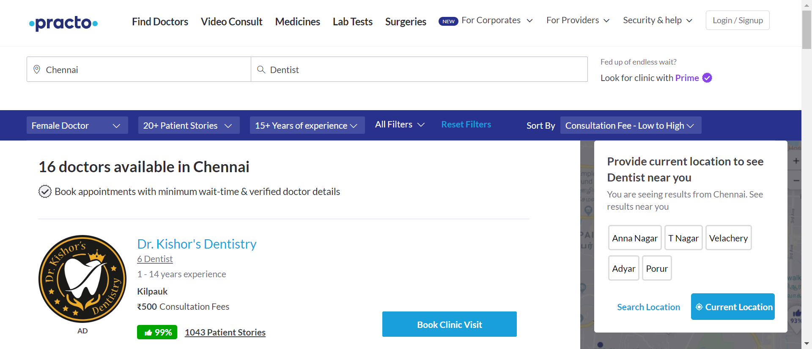When user clicks on surgeries in the practo home pagestepDefinitions.Hooks.Screenshot(io.cucumber.java.Scenario)User retrieves a list of surgeries
PassUser retrieves a list of surgeriesGiven user navigates to the practo home pagestepDefinitions.Hooks.Screenshot(io.cucumber.java.Scenario)User retrieves a list of surgeries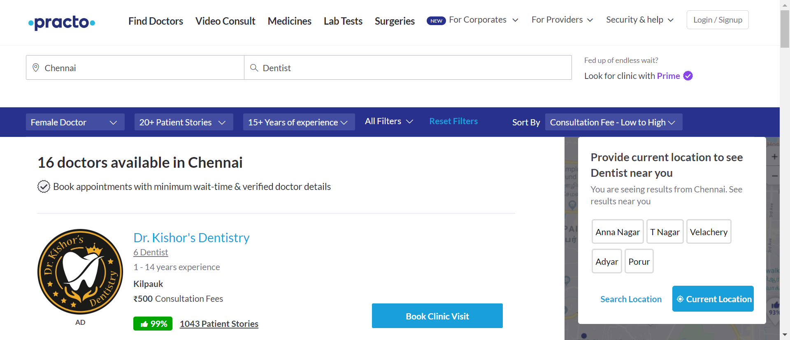When user clicks on surgeries in the practo home pagestepDefinitions.Hooks.Screenshot(io.cucumber.java.Scenario)User retrieves a list of surgeries Then user validates the surgeries pagestepDefinitions.Hooks.Screenshot(io.cucumber.java.Scenario)User retrieves a list of surgeries
Then user validates the surgeries pagestepDefinitions.Hooks.Screenshot(io.cucumber.java.Scenario)User retrieves a list of surgeries Then user scrolls down the pagestepDefinitions.Hooks.Screenshot(io.cucumber.java.Scenario)User retrieves a list of surgeries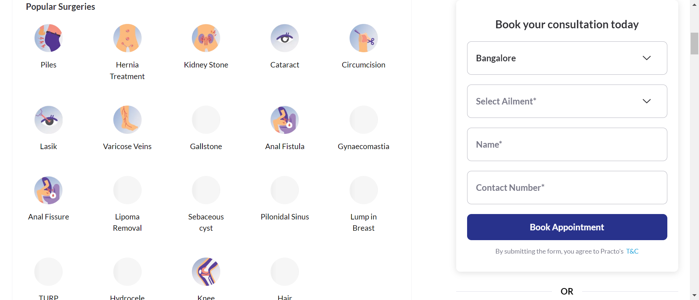And user should capture the list of surgeriesstepDefinitions.Hooks.Screenshot(io.cucumber.java.Scenario)User retrieves a list of surgeriesPassSchedule a demo in health and wellness plans for corporatesGiven the user navigates to practo pagestepDefinitions.Hooks.Screenshot(io.cucumber.java.Scenario)Schedule a demo in health and wellness plans for corporatesWhen user clicks on for corporates in practo home page navigation barstepDefinitions.Hooks.Screenshot(io.cucumber.java.Scenario)Schedule a demo in health and wellness plans for corporates
Then user scrolls down the pagestepDefinitions.Hooks.Screenshot(io.cucumber.java.Scenario)User retrieves a list of surgeries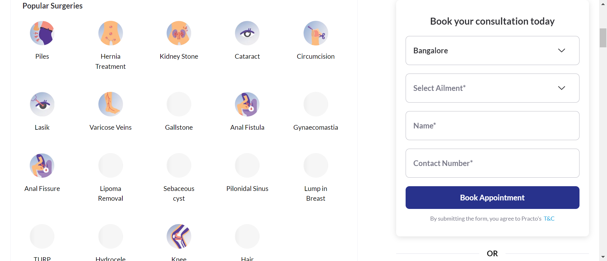And user should capture the list of surgeriesstepDefinitions.Hooks.Screenshot(io.cucumber.java.Scenario)User retrieves a list of surgeriesPassSchedule a demo in health and wellness plans for corporatesGiven the user navigates to practo pagestepDefinitions.Hooks.Screenshot(io.cucumber.java.Scenario)Schedule a demo in health and wellness plans for corporatesWhen user clicks on for corporates in practo home page navigation barstepDefinitions.Hooks.Screenshot(io.cucumber.java.Scenario)Schedule a demo in health and wellness plans for corporates And user clicks health and wellness plans in for corporatesstepDefinitions.Hooks.Screenshot(io.cucumber.java.Scenario)Schedule a demo in health and wellness plans for corporates
And user clicks health and wellness plans in for corporatesstepDefinitions.Hooks.Screenshot(io.cucumber.java.Scenario)Schedule a demo in health and wellness plans for corporates Then user navigates to health and wellness plans page and validate the pagestepDefinitions.Hooks.Screenshot(io.cucumber.java.Scenario)Schedule a demo in health and wellness plans for corporatesWhen user provide invalid email id and valid details for other fields in the formstepDefinitions.Hooks.Screenshot(io.cucumber.java.Scenario)Schedule a demo in health and wellness plans for corporates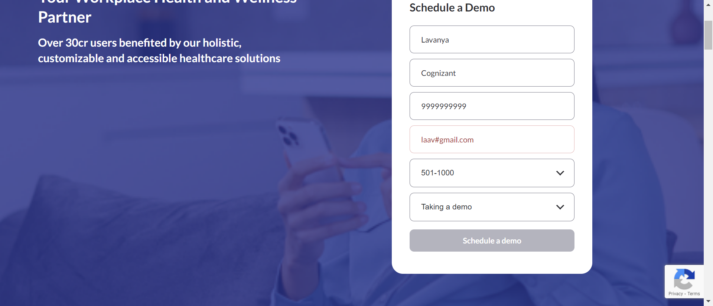Then user validates schedule a demo button is enabled in the health and wellness plans pagestepDefinitions.Hooks.Screenshot(io.cucumber.java.Scenario)Schedule a demo in health and wellness plans for corporates
Then user navigates to health and wellness plans page and validate the pagestepDefinitions.Hooks.Screenshot(io.cucumber.java.Scenario)Schedule a demo in health and wellness plans for corporatesWhen user provide invalid email id and valid details for other fields in the formstepDefinitions.Hooks.Screenshot(io.cucumber.java.Scenario)Schedule a demo in health and wellness plans for corporates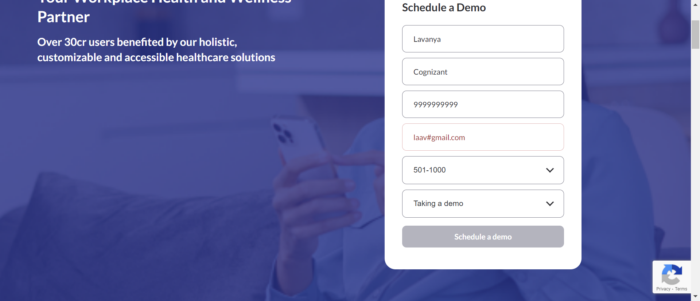Then user validates schedule a demo button is enabled in the health and wellness plans pagestepDefinitions.Hooks.Screenshot(io.cucumber.java.Scenario)Schedule a demo in health and wellness plans for corporates When user enters valid email id and clicks on schedule a demo buttonstepDefinitions.Hooks.Screenshot(io.cucumber.java.Scenario)Schedule a demo in health and wellness plans for corporatesThen user validates schedule a demo button is enabled in the health and wellness plans pagestepDefinitions.Hooks.Screenshot(io.cucumber.java.Scenario)Schedule a demo in health and wellness plans for corporates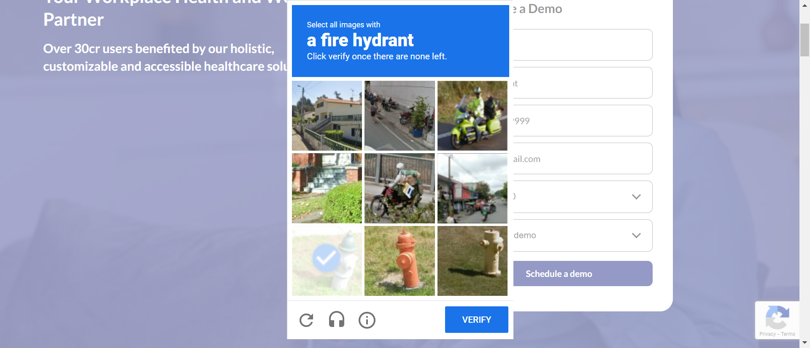Then user validates the Thank you message is displayedstepDefinitions.Hooks.Screenshot(io.cucumber.java.Scenario)Schedule a demo in health and wellness plans for corporates
When user enters valid email id and clicks on schedule a demo buttonstepDefinitions.Hooks.Screenshot(io.cucumber.java.Scenario)Schedule a demo in health and wellness plans for corporatesThen user validates schedule a demo button is enabled in the health and wellness plans pagestepDefinitions.Hooks.Screenshot(io.cucumber.java.Scenario)Schedule a demo in health and wellness plans for corporates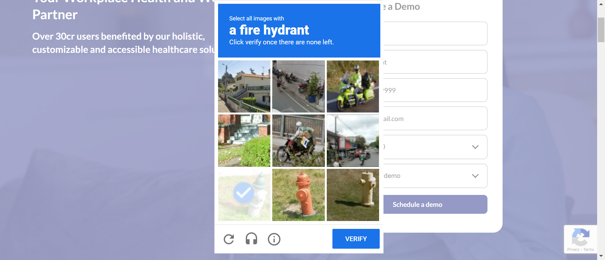Then user validates the Thank you message is displayedstepDefinitions.Hooks.Screenshot(io.cucumber.java.Scenario)Schedule a demo in health and wellness plans for corporates Then user takes a screenshot of thank you messagestepDefinitions.Hooks.Screenshot(io.cucumber.java.Scenario)Schedule a demo in health and wellness plans for corporates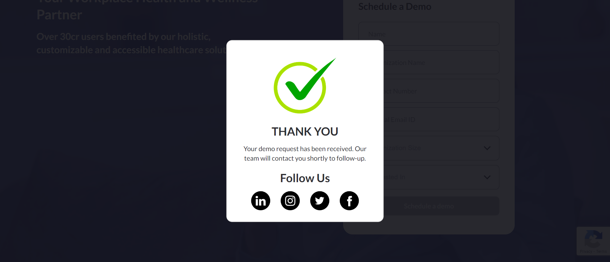
Then user takes a screenshot of thank you messagestepDefinitions.Hooks.Screenshot(io.cucumber.java.Scenario)Schedule a demo in health and wellness plans for corporates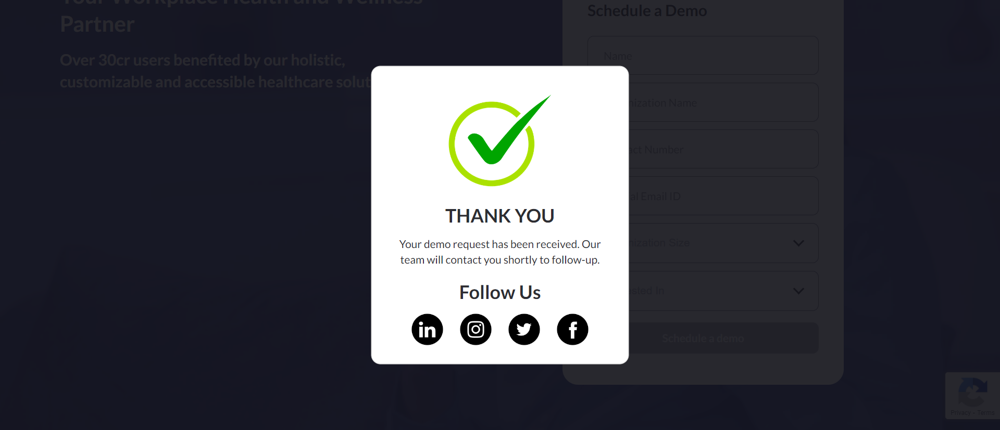 -
regression testing
12:13:16 AM / 00:01:05:361 Fail
regression testing
02.28.2024 12:13:16 AM 02.28.2024 12:14:21 AM 00:01:05:361 · #test-id=59FailUser searches for doctors with specific criteriaGiven the user navigates to practo comstepDefinitions.Hooks.Screenshot(io.cucumber.java.Scenario)User searches for doctors with specific criteria When the user Navigates to the Find Doctors pageFailUser searches for doctors with specific criteria like genderGiven the user navigates to practo comstepDefinitions.Hooks.Screenshot(io.cucumber.java.Scenario)User searches for doctors with specific criteria like gender
When the user Navigates to the Find Doctors pageFailUser searches for doctors with specific criteria like genderGiven the user navigates to practo comstepDefinitions.Hooks.Screenshot(io.cucumber.java.Scenario)User searches for doctors with specific criteria like gender When the user selects the city ChennaiAnd filters the search by DentistStep skippedFailUser filters the search by applying filters on genderGiven the user navigates to practo comstepDefinitions.Hooks.Screenshot(io.cucumber.java.Scenario)When the user applies filters for GenderStep skippedThen user sees list of dentistsStep skippedFailUser filters the search by applying filters on patient storiesGiven the user navigates to practo comstepDefinitions.Hooks.Screenshot(io.cucumber.java.Scenario)When the user applies filters for patient storiesStep skippedThen user sees list of dentistsStep skippedFailUser filters the search by applying filters on experiencesGiven the user navigates to practo comstepDefinitions.Hooks.Screenshot(io.cucumber.java.Scenario)When the user applies filters for experiencesStep skippedThen user sees list of dentistsStep skippedFailUser filters the search by applying filters on feesGiven the user navigates to practo comstepDefinitions.Hooks.Screenshot(io.cucumber.java.Scenario)When the user applies filters for feesStep skippedThen user sees list of dentistsStep skippedFailUser filters the search by applying filters on availabilityGiven the user navigates to practo comstepDefinitions.Hooks.Screenshot(io.cucumber.java.Scenario)When the user applies filters for availabilityStep skippedThen user sees list of dentistsStep skippedFailUser sorts the resultGiven the user navigates to practo comstepDefinitions.Hooks.Screenshot(io.cucumber.java.Scenario)When sorts the result by some criteriaStep skippedThen user sees list of dentistsStep skippedFailUser displays the first five doctorsGiven the user navigates to practo comstepDefinitions.Hooks.Screenshot(io.cucumber.java.Scenario)Then the user should display the details of te first 5 doctorsStep skippedFailUser retrieves a list of surgeriesGiven user navigates to the practo home pagestepDefinitions.Hooks.Screenshot(io.cucumber.java.Scenario)When user clicks on surgeries in the practo home pageStep skippedThen the user sees surgeries pageStep skippedFailUser retrieves a list of surgeriesGiven user navigates to the practo home pagestepDefinitions.Hooks.Screenshot(io.cucumber.java.Scenario)Then user scrolls down the pageStep skippedAnd user should capture the list of surgeriesStep skippedFailSchedule a demo in health and wellness plans for corporatesGiven the user navigates to practo pagestepDefinitions.Hooks.Screenshot(io.cucumber.java.Scenario)When user clicks on for corporates in practo home page navigation barStep skippedAnd user clicks health and wellness plans in for corporatesStep skippedFailSchedule a demo in health and wellness plans for corporatesGiven the user navigates to practo pagestepDefinitions.Hooks.Screenshot(io.cucumber.java.Scenario)When user leaves name field empty and fill all other fields and clicks on schedule a demo buttonStep skippedThen user validates schedule a demo button is enabled in the health and wellness plans pageStep skippedFailSchedule a demo in health and wellness plans for corporatesGiven the user navigates to practo pagestepDefinitions.Hooks.Screenshot(io.cucumber.java.Scenario)When user leaves organization name field empty and fill all other fieldsStep skippedThen user validates schedule a demo button is enabled in the health and wellness plans pageStep skippedFailSchedule a demo in health and wellness plans for corporatesGiven the user navigates to practo pagestepDefinitions.Hooks.Screenshot(io.cucumber.java.Scenario)When user leaves contact number field empty and fill all other fieldsStep skippedThen user validates schedule a demo button is enabled in the health and wellness plans pageStep skippedFailSchedule a demo in health and wellness plans for corporatesGiven the user navigates to practo pagestepDefinitions.Hooks.Screenshot(io.cucumber.java.Scenario)When user enters incorrect number of digits in contact field and fill all other fieldsStep skippedThen user validates schedule a demo button is enabled in the health and wellness plans pageStep skippedFailSchedule a demo in health and wellness plans for corporatesGiven the user navigates to practo pagestepDefinitions.Hooks.Screenshot(io.cucumber.java.Scenario)When user enters number that starts with less than five in contact field and fill all other fieldsStep skippedThen user validates schedule a demo button is enabled in the health and wellness plans pageStep skippedFailSchedule a demo in health and wellness plans for corporatesGiven the user navigates to practo pagestepDefinitions.Hooks.Screenshot(io.cucumber.java.Scenario)When user leaves official email field empty and fill all other fieldsStep skippedThen user validates schedule a demo button is enabled in the health and wellness plans pageStep skippedFailSchedule a demo in health and wellness plans for corporatesGiven the user navigates to practo pagestepDefinitions.Hooks.Screenshot(io.cucumber.java.Scenario)When user provide invalid email id and valid details for other fields in the formregStep skippedThen user validates schedule a demo button is enabled in the health and wellness plans pageStep skippedFailSchedule a demo in health and wellness plans for corporatesGiven the user navigates to practo pagestepDefinitions.Hooks.Screenshot(io.cucumber.java.Scenario)When user enters valid email id and clicks on schedule a demo buttonStep skippedThen user validates schedule a demo button is enabled in the health and wellness plans pageStep skippedFailSchedule a demo in health and wellness plans for corporatesGiven the user navigates to practo pagestepDefinitions.Hooks.Screenshot(io.cucumber.java.Scenario)Then user validates the Thank you message is displayedStep skippedThen user takes a screenshot of thank you messageStep skipped
When the user selects the city ChennaiAnd filters the search by DentistStep skippedFailUser filters the search by applying filters on genderGiven the user navigates to practo comstepDefinitions.Hooks.Screenshot(io.cucumber.java.Scenario)When the user applies filters for GenderStep skippedThen user sees list of dentistsStep skippedFailUser filters the search by applying filters on patient storiesGiven the user navigates to practo comstepDefinitions.Hooks.Screenshot(io.cucumber.java.Scenario)When the user applies filters for patient storiesStep skippedThen user sees list of dentistsStep skippedFailUser filters the search by applying filters on experiencesGiven the user navigates to practo comstepDefinitions.Hooks.Screenshot(io.cucumber.java.Scenario)When the user applies filters for experiencesStep skippedThen user sees list of dentistsStep skippedFailUser filters the search by applying filters on feesGiven the user navigates to practo comstepDefinitions.Hooks.Screenshot(io.cucumber.java.Scenario)When the user applies filters for feesStep skippedThen user sees list of dentistsStep skippedFailUser filters the search by applying filters on availabilityGiven the user navigates to practo comstepDefinitions.Hooks.Screenshot(io.cucumber.java.Scenario)When the user applies filters for availabilityStep skippedThen user sees list of dentistsStep skippedFailUser sorts the resultGiven the user navigates to practo comstepDefinitions.Hooks.Screenshot(io.cucumber.java.Scenario)When sorts the result by some criteriaStep skippedThen user sees list of dentistsStep skippedFailUser displays the first five doctorsGiven the user navigates to practo comstepDefinitions.Hooks.Screenshot(io.cucumber.java.Scenario)Then the user should display the details of te first 5 doctorsStep skippedFailUser retrieves a list of surgeriesGiven user navigates to the practo home pagestepDefinitions.Hooks.Screenshot(io.cucumber.java.Scenario)When user clicks on surgeries in the practo home pageStep skippedThen the user sees surgeries pageStep skippedFailUser retrieves a list of surgeriesGiven user navigates to the practo home pagestepDefinitions.Hooks.Screenshot(io.cucumber.java.Scenario)Then user scrolls down the pageStep skippedAnd user should capture the list of surgeriesStep skippedFailSchedule a demo in health and wellness plans for corporatesGiven the user navigates to practo pagestepDefinitions.Hooks.Screenshot(io.cucumber.java.Scenario)When user clicks on for corporates in practo home page navigation barStep skippedAnd user clicks health and wellness plans in for corporatesStep skippedFailSchedule a demo in health and wellness plans for corporatesGiven the user navigates to practo pagestepDefinitions.Hooks.Screenshot(io.cucumber.java.Scenario)When user leaves name field empty and fill all other fields and clicks on schedule a demo buttonStep skippedThen user validates schedule a demo button is enabled in the health and wellness plans pageStep skippedFailSchedule a demo in health and wellness plans for corporatesGiven the user navigates to practo pagestepDefinitions.Hooks.Screenshot(io.cucumber.java.Scenario)When user leaves organization name field empty and fill all other fieldsStep skippedThen user validates schedule a demo button is enabled in the health and wellness plans pageStep skippedFailSchedule a demo in health and wellness plans for corporatesGiven the user navigates to practo pagestepDefinitions.Hooks.Screenshot(io.cucumber.java.Scenario)When user leaves contact number field empty and fill all other fieldsStep skippedThen user validates schedule a demo button is enabled in the health and wellness plans pageStep skippedFailSchedule a demo in health and wellness plans for corporatesGiven the user navigates to practo pagestepDefinitions.Hooks.Screenshot(io.cucumber.java.Scenario)When user enters incorrect number of digits in contact field and fill all other fieldsStep skippedThen user validates schedule a demo button is enabled in the health and wellness plans pageStep skippedFailSchedule a demo in health and wellness plans for corporatesGiven the user navigates to practo pagestepDefinitions.Hooks.Screenshot(io.cucumber.java.Scenario)When user enters number that starts with less than five in contact field and fill all other fieldsStep skippedThen user validates schedule a demo button is enabled in the health and wellness plans pageStep skippedFailSchedule a demo in health and wellness plans for corporatesGiven the user navigates to practo pagestepDefinitions.Hooks.Screenshot(io.cucumber.java.Scenario)When user leaves official email field empty and fill all other fieldsStep skippedThen user validates schedule a demo button is enabled in the health and wellness plans pageStep skippedFailSchedule a demo in health and wellness plans for corporatesGiven the user navigates to practo pagestepDefinitions.Hooks.Screenshot(io.cucumber.java.Scenario)When user provide invalid email id and valid details for other fields in the formregStep skippedThen user validates schedule a demo button is enabled in the health and wellness plans pageStep skippedFailSchedule a demo in health and wellness plans for corporatesGiven the user navigates to practo pagestepDefinitions.Hooks.Screenshot(io.cucumber.java.Scenario)When user enters valid email id and clicks on schedule a demo buttonStep skippedThen user validates schedule a demo button is enabled in the health and wellness plans pageStep skippedFailSchedule a demo in health and wellness plans for corporatesGiven the user navigates to practo pagestepDefinitions.Hooks.Screenshot(io.cucumber.java.Scenario)Then user validates the Thank you message is displayedStep skippedThen user takes a screenshot of thank you messageStep skipped -
All tests
12:14:21 AM / 00:00:00:352 Fail
All tests
02.28.2024 12:14:21 AM 02.28.2024 12:14:22 AM 00:00:00:352 · #test-id=203FailUser searches for practo homepageGiven the user navigates to practo comstepDefinitions.Hooks.Screenshot(io.cucumber.java.Scenario)When the user validates the HomepageTitleStep skippedFailUser searches for clicks Find doctorsGiven the user navigates to practo comstepDefinitions.Hooks.Screenshot(io.cucumber.java.Scenario)Then the user Navigates to the Find Doctors pageStep skippedFailUser searches for doctors by choosing cityGiven the user navigates to practo comstepDefinitions.Hooks.Screenshot(io.cucumber.java.Scenario)Then the user selects the city ChennaiStep skippedFailUser searches for doctors with specific criteriaGiven the user navigates to practo comstepDefinitions.Hooks.Screenshot(io.cucumber.java.Scenario)And filters the search by DentistStep skippedFailUser filters the search by applying filters on genderGiven the user navigates to practo comstepDefinitions.Hooks.Screenshot(io.cucumber.java.Scenario)When the user applies filters for GenderStep skippedFailUser filters the search by applying filters on patient storiesGiven the user navigates to practo comstepDefinitions.Hooks.Screenshot(io.cucumber.java.Scenario)When the user applies filters for patient storiesStep skippedFailUser filters the search by applying filters on experiencesGiven the user navigates to practo comstepDefinitions.Hooks.Screenshot(io.cucumber.java.Scenario)When the user applies filters for experiencesStep skippedFailUser filters the search by applying filters on feesGiven the user navigates to practo comstepDefinitions.Hooks.Screenshot(io.cucumber.java.Scenario)When the user applies filters for feesStep skippedFailUser filters the search by applying filters on availabilityGiven the user navigates to practo comstepDefinitions.Hooks.Screenshot(io.cucumber.java.Scenario)When the user applies filters for availabilityStep skippedFailUser sorts the resultGiven the user navigates to practo comstepDefinitions.Hooks.Screenshot(io.cucumber.java.Scenario)When sorts the result by some criteriaStep skippedFailUser sees list of doctorsGiven the user navigates to practo comstepDefinitions.Hooks.Screenshot(io.cucumber.java.Scenario)Then user sees list of dentistsStep skippedFailSurgeries Page Navigation in practo websiteGiven user navigates to the practo home pagestepDefinitions.Hooks.Screenshot(io.cucumber.java.Scenario)When user clicks on surgeries in the practo home pageStep skippedFailSurgeries Page Navigation in practo websiteGiven user navigates to the practo home pagestepDefinitions.Hooks.Screenshot(io.cucumber.java.Scenario)Then user validates the surgeries pageStep skippedFailUser scrollsdown to retrieve a list of surgeriesGiven user navigates to the practo home pagestepDefinitions.Hooks.Screenshot(io.cucumber.java.Scenario)Then user scrolls down the pageStep skippedFailUser sees list of surgeriesGiven user navigates to the practo home pagestepDefinitions.Hooks.Screenshot(io.cucumber.java.Scenario)Then user sees list of surgeriesStep skippedFailCorporate Health and Wellness Form ValidationGiven the user navigates to practo pagestepDefinitions.Hooks.Screenshot(io.cucumber.java.Scenario)When user clicks on for corporates in practo home page navigation barStep skippedFailCorporate Health and Wellness Form ValidationGiven the user navigates to practo pagestepDefinitions.Hooks.Screenshot(io.cucumber.java.Scenario)And user clicks health and wellness plans in for corporatesStep skippedFailCorporate Health and Wellness Form ValidationGiven the user navigates to practo pagestepDefinitions.Hooks.Screenshot(io.cucumber.java.Scenario)Then user navigates to health and wellness plans page and validate the pageStep skippedFailCorporate Health and Wellness Form Validation with invalid emailGiven the user navigates to practo pagestepDefinitions.Hooks.Screenshot(io.cucumber.java.Scenario)When user provide invalid email id and valid details for other fields in the formStep skippedFailCorporate Health and Wellness Form Validation with invalid emailGiven the user navigates to practo pagestepDefinitions.Hooks.Screenshot(io.cucumber.java.Scenario)Then user validates schedule a demo button is enabled in the health and wellness plans pageStep skippedFailCorporate Health and Wellness Form Validation with valid emailGiven the user navigates to practo pagestepDefinitions.Hooks.Screenshot(io.cucumber.java.Scenario)When user enters valid email id and clicks on schedule a demo buttonStep skippedFailCorporate Health and Wellness Form Validation with invalid emailGiven the user navigates to practo pagestepDefinitions.Hooks.Screenshot(io.cucumber.java.Scenario)Then user validates schedule a demo button is enabled in the health and wellness plans pageStep skipped
-
org.openqa.selenium.NoSuchElementException
2 tests
org.openqa.selenium.NoSuchElementException
2 failedStatus Timestamp TestName Fail 00:13:16 AM When the user Navigates to the Find Doctors page regression testing.User searches for doctors with specific criteria.When the user Navigates to the Find Doctors pageFail 00:14:16 AM When the user selects the city Chennai regression testing.User searches for doctors with specific criteria like gender.When the user selects the city Chennai -
org.openqa.selenium.NoSuchWindowException
41 tests
org.openqa.selenium.NoSuchWindowException
41 failedStatus Timestamp TestName Fail 00:14:21 AM stepDefinitions.Hooks.Screenshot(io.cucumber.java.Scenario) regression testing.User filters the search by applying filters on gender.stepDefinitions.Hooks.Screenshot(io.cucumber.java.Scenario)Fail 00:14:21 AM stepDefinitions.Hooks.Screenshot(io.cucumber.java.Scenario) regression testing.User filters the search by applying filters on patient stories.stepDefinitions.Hooks.Screenshot(io.cucumber.java.Scenario)Fail 00:14:21 AM stepDefinitions.Hooks.Screenshot(io.cucumber.java.Scenario) regression testing.User filters the search by applying filters on experiences.stepDefinitions.Hooks.Screenshot(io.cucumber.java.Scenario)Fail 00:14:21 AM stepDefinitions.Hooks.Screenshot(io.cucumber.java.Scenario) regression testing.User filters the search by applying filters on fees.stepDefinitions.Hooks.Screenshot(io.cucumber.java.Scenario)Fail 00:14:21 AM stepDefinitions.Hooks.Screenshot(io.cucumber.java.Scenario) regression testing.User filters the search by applying filters on availability.stepDefinitions.Hooks.Screenshot(io.cucumber.java.Scenario)Fail 00:14:21 AM stepDefinitions.Hooks.Screenshot(io.cucumber.java.Scenario) regression testing.User sorts the result.stepDefinitions.Hooks.Screenshot(io.cucumber.java.Scenario)Fail 00:14:21 AM stepDefinitions.Hooks.Screenshot(io.cucumber.java.Scenario) regression testing.User displays the first five doctors.stepDefinitions.Hooks.Screenshot(io.cucumber.java.Scenario)Fail 00:14:21 AM stepDefinitions.Hooks.Screenshot(io.cucumber.java.Scenario) regression testing.User retrieves a list of surgeries.stepDefinitions.Hooks.Screenshot(io.cucumber.java.Scenario)Fail 00:14:21 AM stepDefinitions.Hooks.Screenshot(io.cucumber.java.Scenario) regression testing.User retrieves a list of surgeries.stepDefinitions.Hooks.Screenshot(io.cucumber.java.Scenario)Fail 00:14:21 AM stepDefinitions.Hooks.Screenshot(io.cucumber.java.Scenario) regression testing.Schedule a demo in health and wellness plans for corporates.stepDefinitions.Hooks.Screenshot(io.cucumber.java.Scenario)Fail 00:14:21 AM stepDefinitions.Hooks.Screenshot(io.cucumber.java.Scenario) regression testing.Schedule a demo in health and wellness plans for corporates.stepDefinitions.Hooks.Screenshot(io.cucumber.java.Scenario)Fail 00:14:21 AM stepDefinitions.Hooks.Screenshot(io.cucumber.java.Scenario) regression testing.Schedule a demo in health and wellness plans for corporates.stepDefinitions.Hooks.Screenshot(io.cucumber.java.Scenario)Fail 00:14:21 AM stepDefinitions.Hooks.Screenshot(io.cucumber.java.Scenario) regression testing.Schedule a demo in health and wellness plans for corporates.stepDefinitions.Hooks.Screenshot(io.cucumber.java.Scenario)Fail 00:14:21 AM stepDefinitions.Hooks.Screenshot(io.cucumber.java.Scenario) regression testing.Schedule a demo in health and wellness plans for corporates.stepDefinitions.Hooks.Screenshot(io.cucumber.java.Scenario)Fail 00:14:21 AM stepDefinitions.Hooks.Screenshot(io.cucumber.java.Scenario) regression testing.Schedule a demo in health and wellness plans for corporates.stepDefinitions.Hooks.Screenshot(io.cucumber.java.Scenario)Fail 00:14:21 AM stepDefinitions.Hooks.Screenshot(io.cucumber.java.Scenario) regression testing.Schedule a demo in health and wellness plans for corporates.stepDefinitions.Hooks.Screenshot(io.cucumber.java.Scenario)Fail 00:14:21 AM stepDefinitions.Hooks.Screenshot(io.cucumber.java.Scenario) regression testing.Schedule a demo in health and wellness plans for corporates.stepDefinitions.Hooks.Screenshot(io.cucumber.java.Scenario)Fail 00:14:21 AM stepDefinitions.Hooks.Screenshot(io.cucumber.java.Scenario) regression testing.Schedule a demo in health and wellness plans for corporates.stepDefinitions.Hooks.Screenshot(io.cucumber.java.Scenario)Fail 00:14:21 AM stepDefinitions.Hooks.Screenshot(io.cucumber.java.Scenario) regression testing.Schedule a demo in health and wellness plans for corporates.stepDefinitions.Hooks.Screenshot(io.cucumber.java.Scenario)Fail 00:14:21 AM stepDefinitions.Hooks.Screenshot(io.cucumber.java.Scenario) All tests.User searches for practo homepage.stepDefinitions.Hooks.Screenshot(io.cucumber.java.Scenario)Fail 00:14:21 AM stepDefinitions.Hooks.Screenshot(io.cucumber.java.Scenario) All tests.User searches for clicks Find doctors.stepDefinitions.Hooks.Screenshot(io.cucumber.java.Scenario)Fail 00:14:21 AM stepDefinitions.Hooks.Screenshot(io.cucumber.java.Scenario) All tests.User searches for doctors by choosing city.stepDefinitions.Hooks.Screenshot(io.cucumber.java.Scenario)Fail 00:14:21 AM stepDefinitions.Hooks.Screenshot(io.cucumber.java.Scenario) All tests.User searches for doctors with specific criteria.stepDefinitions.Hooks.Screenshot(io.cucumber.java.Scenario)Fail 00:14:21 AM stepDefinitions.Hooks.Screenshot(io.cucumber.java.Scenario) All tests.User filters the search by applying filters on gender.stepDefinitions.Hooks.Screenshot(io.cucumber.java.Scenario)Fail 00:14:21 AM stepDefinitions.Hooks.Screenshot(io.cucumber.java.Scenario) All tests.User filters the search by applying filters on patient stories.stepDefinitions.Hooks.Screenshot(io.cucumber.java.Scenario)Fail 00:14:21 AM stepDefinitions.Hooks.Screenshot(io.cucumber.java.Scenario) All tests.User filters the search by applying filters on experiences.stepDefinitions.Hooks.Screenshot(io.cucumber.java.Scenario)Fail 00:14:21 AM stepDefinitions.Hooks.Screenshot(io.cucumber.java.Scenario) All tests.User filters the search by applying filters on fees.stepDefinitions.Hooks.Screenshot(io.cucumber.java.Scenario)Fail 00:14:21 AM stepDefinitions.Hooks.Screenshot(io.cucumber.java.Scenario) All tests.User filters the search by applying filters on availability.stepDefinitions.Hooks.Screenshot(io.cucumber.java.Scenario)Fail 00:14:21 AM stepDefinitions.Hooks.Screenshot(io.cucumber.java.Scenario) All tests.User sorts the result.stepDefinitions.Hooks.Screenshot(io.cucumber.java.Scenario)Fail 00:14:22 AM stepDefinitions.Hooks.Screenshot(io.cucumber.java.Scenario) All tests.User sees list of doctors.stepDefinitions.Hooks.Screenshot(io.cucumber.java.Scenario)Fail 00:14:22 AM stepDefinitions.Hooks.Screenshot(io.cucumber.java.Scenario) All tests.Surgeries Page Navigation in practo website.stepDefinitions.Hooks.Screenshot(io.cucumber.java.Scenario)Fail 00:14:22 AM stepDefinitions.Hooks.Screenshot(io.cucumber.java.Scenario) All tests.Surgeries Page Navigation in practo website.stepDefinitions.Hooks.Screenshot(io.cucumber.java.Scenario)Fail 00:14:22 AM stepDefinitions.Hooks.Screenshot(io.cucumber.java.Scenario) All tests.User scrollsdown to retrieve a list of surgeries.stepDefinitions.Hooks.Screenshot(io.cucumber.java.Scenario)Fail 00:14:22 AM stepDefinitions.Hooks.Screenshot(io.cucumber.java.Scenario) All tests.User sees list of surgeries.stepDefinitions.Hooks.Screenshot(io.cucumber.java.Scenario)Fail 00:14:22 AM stepDefinitions.Hooks.Screenshot(io.cucumber.java.Scenario) All tests.Corporate Health and Wellness Form Validation.stepDefinitions.Hooks.Screenshot(io.cucumber.java.Scenario)Fail 00:14:22 AM stepDefinitions.Hooks.Screenshot(io.cucumber.java.Scenario) All tests.Corporate Health and Wellness Form Validation.stepDefinitions.Hooks.Screenshot(io.cucumber.java.Scenario)Fail 00:14:22 AM stepDefinitions.Hooks.Screenshot(io.cucumber.java.Scenario) All tests.Corporate Health and Wellness Form Validation.stepDefinitions.Hooks.Screenshot(io.cucumber.java.Scenario)Fail 00:14:22 AM stepDefinitions.Hooks.Screenshot(io.cucumber.java.Scenario) All tests.Corporate Health and Wellness Form Validation with invalid email.stepDefinitions.Hooks.Screenshot(io.cucumber.java.Scenario)Fail 00:14:22 AM stepDefinitions.Hooks.Screenshot(io.cucumber.java.Scenario) All tests.Corporate Health and Wellness Form Validation with invalid email.stepDefinitions.Hooks.Screenshot(io.cucumber.java.Scenario)Fail 00:14:22 AM stepDefinitions.Hooks.Screenshot(io.cucumber.java.Scenario) All tests.Corporate Health and Wellness Form Validation with valid email.stepDefinitions.Hooks.Screenshot(io.cucumber.java.Scenario)Fail 00:14:22 AM stepDefinitions.Hooks.Screenshot(io.cucumber.java.Scenario) All tests.Corporate Health and Wellness Form Validation with invalid email.stepDefinitions.Hooks.Screenshot(io.cucumber.java.Scenario)
-
@smoke
22 tests
@smoke
22 failedStatus Timestamp TestName Fail 00:14:21 AM User searches for practo homepage All tests.User searches for practo homepageFail 00:14:21 AM User searches for clicks Find doctors All tests.User searches for clicks Find doctorsFail 00:14:21 AM User searches for doctors by choosing city All tests.User searches for doctors by choosing cityFail 00:14:21 AM User searches for doctors with specific criteria All tests.User searches for doctors with specific criteriaFail 00:14:21 AM User filters the search by applying filters on gender All tests.User filters the search by applying filters on genderFail 00:14:21 AM User filters the search by applying filters on patient stories All tests.User filters the search by applying filters on patient storiesFail 00:14:21 AM User filters the search by applying filters on experiences All tests.User filters the search by applying filters on experiencesFail 00:14:21 AM User filters the search by applying filters on fees All tests.User filters the search by applying filters on feesFail 00:14:21 AM User filters the search by applying filters on availability All tests.User filters the search by applying filters on availabilityFail 00:14:21 AM User sorts the result All tests.User sorts the resultFail 00:14:22 AM User sees list of doctors All tests.User sees list of doctorsFail 00:14:22 AM Surgeries Page Navigation in practo website All tests.Surgeries Page Navigation in practo websiteFail 00:14:22 AM Surgeries Page Navigation in practo website All tests.Surgeries Page Navigation in practo websiteFail 00:14:22 AM User scrollsdown to retrieve a list of surgeries All tests.User scrollsdown to retrieve a list of surgeriesFail 00:14:22 AM User sees list of surgeries All tests.User sees list of surgeriesFail 00:14:22 AM Corporate Health and Wellness Form Validation All tests.Corporate Health and Wellness Form ValidationFail 00:14:22 AM Corporate Health and Wellness Form Validation All tests.Corporate Health and Wellness Form ValidationFail 00:14:22 AM Corporate Health and Wellness Form Validation All tests.Corporate Health and Wellness Form ValidationFail 00:14:22 AM Corporate Health and Wellness Form Validation with invalid email All tests.Corporate Health and Wellness Form Validation with invalid emailFail 00:14:22 AM Corporate Health and Wellness Form Validation with invalid email All tests.Corporate Health and Wellness Form Validation with invalid emailFail 00:14:22 AM Corporate Health and Wellness Form Validation with valid email All tests.Corporate Health and Wellness Form Validation with valid emailFail 00:14:22 AM Corporate Health and Wellness Form Validation with invalid email All tests.Corporate Health and Wellness Form Validation with invalid email -
@regression
21 tests
@regression
21 failedStatus Timestamp TestName Fail 00:13:16 AM User searches for doctors with specific criteria regression testing.User searches for doctors with specific criteriaFail 00:14:16 AM User searches for doctors with specific criteria like gender regression testing.User searches for doctors with specific criteria like genderFail 00:14:21 AM User filters the search by applying filters on gender regression testing.User filters the search by applying filters on genderFail 00:14:21 AM User filters the search by applying filters on patient stories regression testing.User filters the search by applying filters on patient storiesFail 00:14:21 AM User filters the search by applying filters on experiences regression testing.User filters the search by applying filters on experiencesFail 00:14:21 AM User filters the search by applying filters on fees regression testing.User filters the search by applying filters on feesFail 00:14:21 AM User filters the search by applying filters on availability regression testing.User filters the search by applying filters on availabilityFail 00:14:21 AM User sorts the result regression testing.User sorts the resultFail 00:14:21 AM User displays the first five doctors regression testing.User displays the first five doctorsFail 00:14:21 AM User retrieves a list of surgeries regression testing.User retrieves a list of surgeriesFail 00:14:21 AM User retrieves a list of surgeries regression testing.User retrieves a list of surgeriesFail 00:14:21 AM Schedule a demo in health and wellness plans for corporates regression testing.Schedule a demo in health and wellness plans for corporatesFail 00:14:21 AM Schedule a demo in health and wellness plans for corporates regression testing.Schedule a demo in health and wellness plans for corporatesFail 00:14:21 AM Schedule a demo in health and wellness plans for corporates regression testing.Schedule a demo in health and wellness plans for corporatesFail 00:14:21 AM Schedule a demo in health and wellness plans for corporates regression testing.Schedule a demo in health and wellness plans for corporatesFail 00:14:21 AM Schedule a demo in health and wellness plans for corporates regression testing.Schedule a demo in health and wellness plans for corporatesFail 00:14:21 AM Schedule a demo in health and wellness plans for corporates regression testing.Schedule a demo in health and wellness plans for corporatesFail 00:14:21 AM Schedule a demo in health and wellness plans for corporates regression testing.Schedule a demo in health and wellness plans for corporatesFail 00:14:21 AM Schedule a demo in health and wellness plans for corporates regression testing.Schedule a demo in health and wellness plans for corporatesFail 00:14:21 AM Schedule a demo in health and wellness plans for corporates regression testing.Schedule a demo in health and wellness plans for corporatesFail 00:14:21 AM Schedule a demo in health and wellness plans for corporates regression testing.Schedule a demo in health and wellness plans for corporates
Started
Feb 28, 2024 12:11:41 AM
Ended
Feb 28, 2024 12:14:23 AM
Features Passed
1
Features Failed
2
Features
Scenarios
Steps
Timeline
Tags
| Name | Passed | Failed | Skipped | Others | Passed % |
|---|---|---|---|---|---|
| @smoke | 0 | 22 | 0 | 0 | 0% |
| @regression | 0 | 21 | 0 | 0 | 0% |